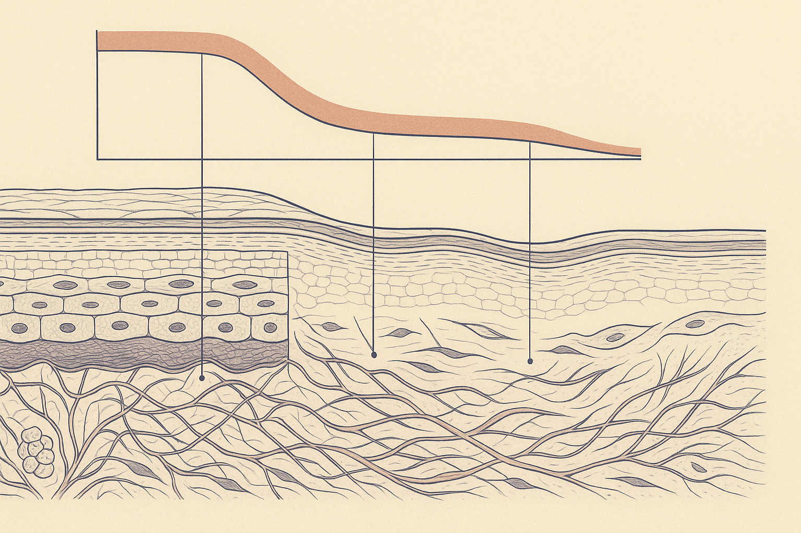
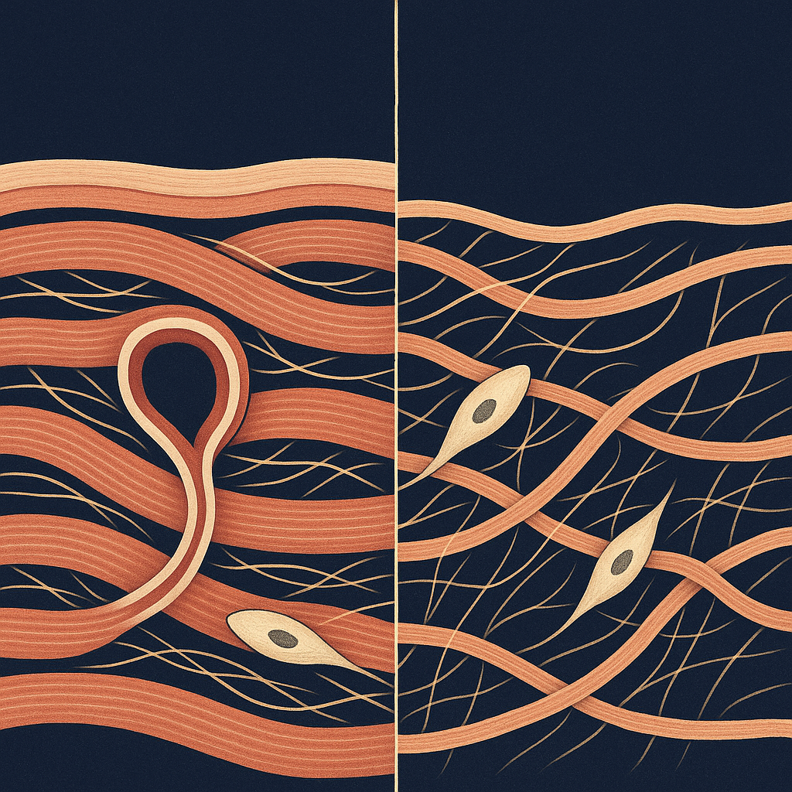
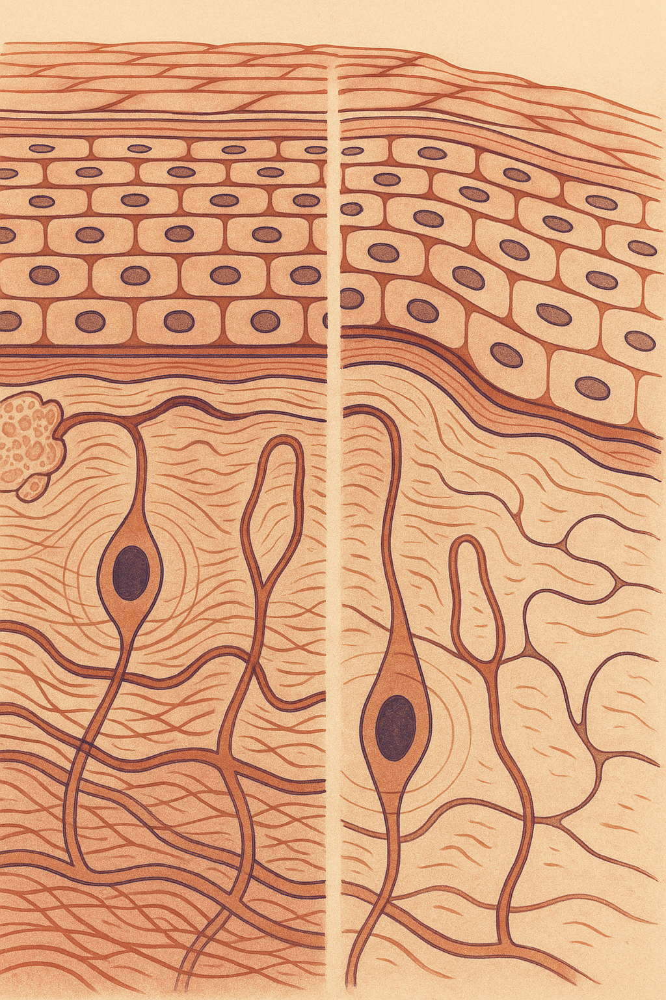

Review below. Reply approve to publish the Facebook post, or tell me edits.

"Nobody warned me about my skin." We hear that sentence more than we hear any question.
Not the slow, polite decline everyone describes. Something faster. Skin that behaved reliably for thirty years starts behaving like someone else's. The moisturiser that always worked sits on top instead of sinking in. Makeup catches in texture that was not there last winter. Or the opposite arrives: breakouts along the jaw, at forty-six, after decades of clear skin.
Before we go further, a note on who is writing this. Redermis is a new brand. We do not yet have a wall of reviews, and we are not going to invent any. So this is not a testimonial piece and it is not a product argument. It is biology, plainly explained, plus a genuine invitation to compare notes at the end.
If you only answer one thing today, answer this: what was the first change you noticed, and what age were you? The comments are open at the bottom.
Oestrogen declines. That part is well known. What is less commonly explained is where oestrogen was doing work in the skin, and why losing it registers so visibly.
Oestrogen receptors sit in fibroblasts (the cells that manufacture collagen and elastin), in the sebaceous glands, and in the small blood vessels of the dermis. When circulating oestrogen falls, all three feel it.
Collagen and elastin production slows. Research in this area commonly reports a sharp drop in dermal collagen in the first years after menopause, with the decline steepest early and then more gradual. That is the literature's finding, not our claim, and figures vary between studies. The practical translation: the scaffolding under the surface is being replaced more slowly than it is being lost.
The dermis thins. Less collagen and less ground substance means a thinner, less cushioned layer beneath the surface. Thinner skin shows what is underneath it more readily: vessels, shadows, the fine creasing that used to spring back.
Skin gets drier. Sebum output drops and barrier lipids shift in composition. Skin that was comfortably normal, or even oily, can become genuinely dry for the first time. Water leaves faster. Products sting that never stung before.
Vascularity reduces. Fewer and less responsive small vessels means less of that healthy flush, and slower delivery of what repair requires. Small injuries, a scratch or a post-blemish mark, linger longer than they used to.
And for some, the opposite problem. Androgens do not fall at the same rate as oestrogen, so the ratio between them shifts. That can drive adult breakouts along the jaw and chin, on skin that is simultaneously dry and thinning. Dry and spotty at once is not a contradiction. It is a fairly ordinary consequence of the hormonal maths.
Because perception is a threshold effect, not a gradient.
The change is continuous. Your noticing of it is not. Collagen density can drift down for years without crossing the line where it alters how light falls across your cheek. Then one morning it does, and the impression is that it happened overnight in a hotel bathroom with bad lighting.
The same applies to dryness. Barrier function degrades quietly until the day a familiar cleanser leaves your face tight, and suddenly the whole thing feels like an ambush.
> You are not noticing the year the change started. You are noticing the day it became visible.
That is worth naming, because the sudden feeling often triggers a sudden response: a cupboard full of new actives bought in a fortnight. Which is usually the wrong move.
Mostly subtraction. Genuinely.
The limits first, because they matter more than the benefits.
Nothing topical and nothing you use at home changes your hormones. Not a cream, not a serum, not a light. If a product's story implies otherwise, that is the moment to close the tab.
Laxity, volume loss, and the change in bone and fat pads that alters the shape of a face are structural. They sit outside the reach of any at-home cream, roller, or light device. That is honest, and it is also freeing: knowing what a category cannot do stops you spending money on it in the hope that it might.
What is realistically in scope for a gentle daily habit is surface level. Hydration. Tone. Radiance. The appearance of early fine lines. Comfort, which is not a small thing when your skin has stopped feeling like yours.
Within that surface-level bracket, and no further.
The proper name is photobiomodulation. Stripped of jargon: certain wavelengths of visible light may support the look of skin by nudging fibroblast activity. Red light therapy at home is a cosmetic support, not medicine. It is not hormone therapy, and it is not a substitute for a conversation with your GP or dermatologist. It sits closer to sunscreen and flossing than to anything clinical: small, repeated, cumulative.
So the fair answer to "does it work" is: it will not rebuild structure, it will not put oestrogen back, and anyone promising either is selling you something. What a consistent ten minutes a day is reasonably aimed at is tone, radiance, comfort and the appearance of early fine lines.
And to say it plainly: if this phase is affecting your sleep, your mood, your joints, or anything beyond your skin, that is a medical conversation, not a skincare one. Book it. Skincare is the least important part of perimenopause, even though it is often the loudest.
This is the part we actually want.
What was the first thing you noticed, and what age were you?
Name the change nobody warned you about. The texture, the dryness, the breakouts that made no sense, the way your face looked different in photos before it looked different in the mirror. And if something genuinely helped, say what it was, even if it was sleep, or stopping a product rather than starting one. Other women reading this will get more from your answer than from anything we write.
Our mask is a ten-minute daily maintenance habit, a cosmetic device only. The full spec is on the Redermis mask page.

A jawline breakout at 47, on skin that is also dry. That one confuses everybody.
The tells women actually report are oddly specific. Foundation sitting in texture that was not there last year. Dry patches in places that were oily for two decades. One bad night now taking three days to leave your face.
Here is the bit of biology that explains the whole mess at once. Oestrogen receptors sit in the cells that make collagen and in the glands that make oil. When oestrogen drops, both outputs drop, while androgens fall more slowly. That is why skin can read as thinner, drier and spottier all at once, which sounds contradictory until you know where the switch is.
Worth saying plainly: nothing you put on your face changes a hormone. Laxity and volume are structural, and no cream, roller or light touches them. What a gentle, consistent routine can support is surface level, hydration, tone, the look of early lines.
And we are a new brand still earning our reviews. We will not invent any.
We are building this in the open. The mask spec (a cosmetic device, ten minutes a day) is linked in our bio if you are curious.
What was the first change you noticed, and how old were you? And what did you stop doing that actually helped?
Tag the friend who keeps saying nobody warned her.
#perimenopause #skinlongevity #skinhealth #redlighttherapy #ledtherapy #redermis

A jawline breakout at 47, on skin that is also dry. That is not a contradiction.
What shifts: oestrogen falls, and its receptors sit in fibroblasts (your collagen makers), oil glands and blood vessels. The dermis gets less support and less oil.
What you notice: skin that feels thinner, dryness that arrived out of nowhere, slower recovery from a scratch or a spot, and for some of us, those late breakouts.
What nothing at home touches: hormones, laxity, volume loss. Structural is structural, and no at-home device changes that.
What is actually in scope: barrier, hydration, tone, the appearance of early fine lines. Small, real, worth doing.
We are a new brand still earning our reviews. We will not invent any. Light therapy sits in that last bucket for us: a ten minute daily cosmetic habit, nothing more. Details on the mask (cosmetic device only) are in our bio.
Save this for the friend who says nobody warned her.
Tell us in the comments: the one nobody warned you about, and the age it landed.
#perimenopause #perimenopausalskin #skinlongevity #skinbarrier #womenover40 #skincareaustralia #redlighttherapy #ledfacemask
## Title
Red Light Therapy And Perimenopausal Skin: What Is Really Happening In The Dermis
## Description
Perimenopause thins the dermis, and no cream or at-home light device rebuilds that structure. Oestrogen receptors sit in the collagen-making cells and in the oil glands, so both outputs drop at once: less support below and less oil at the surface, and the change often registers all at once. The fix is not structural. A gentle 10-minute daily habit can support tone, hydration and the look of early fine lines. We are a new brand and will not invent reviews. Save this and read the full explainer.
## Hashtags
#PerimenopauseSkin #SkinLongevity #RedLightTherapy #RedLightTherapyAtHome #LEDFaceMask #SkincareOver40
Note: this pin reuses the Instagram image. Outbound link: https://redermis.com.au/products/red-light-therapy-face-neck-mask